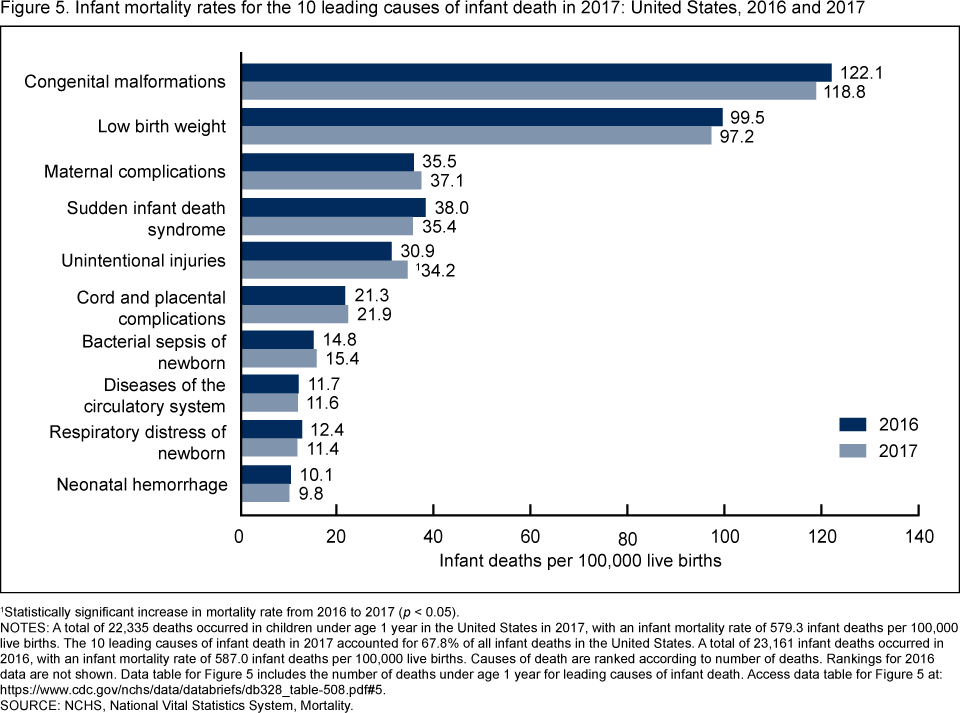
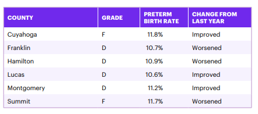
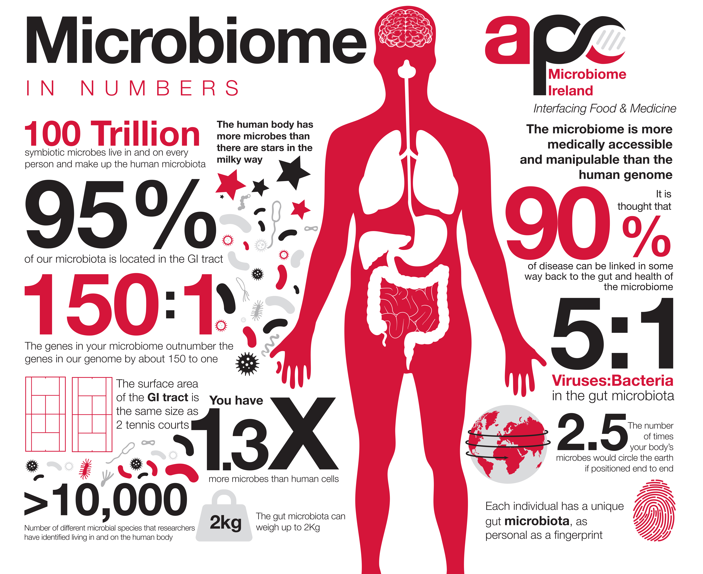

Topic Introduction: Some definitions and learnings about our topic
Infant Mortality
Infant mortality is the death of an infant before the age of 1. "It is a key indicator of health and the effectiveness of a health care system," says the United Health Foundation in it's annual compilation of Health Rankings.
Mortality Statistics
Mortality statistics are gathered by the Centers for Disease Control and Prevention (CDC) and the National Center Health for Statistics (NCHS). The infant mortality rate (IMR) is the number of infant deaths recorded for every 1,000 live births, per the CDC.
Leading Causes of Death
The leading causes of death for a newborn only shift slightly from year to year. Per the
CDC in the year 2017, the top five causes of death were:
1. Birth Defects
2. Preterm Birth / low birth weight
3. Maternal Pregnancy Complications
4. Sudden Infant Death Syndrome (SIDS)
5. Injuries.
A more concerning statistic is that the 2018 infant mortality level was 579.3 per 100,000
births in the US, but remained statistically unchanged from 2016, with 587.0 deaths per 100,000 births.

Ohio Infant Mortality

Ohio ranks 41 (tied with N. Carolina out of 50 states) with a rate of 7.3 in 2018, an increase from
2017's rate of 7.0.
In the annual report of America's Health Rankings by the United Health
Foundation, Ohio has some strengths such as a low uninsured population and a high rate of primary
care physicians, but our challenges come from a high rate of smoking, air pollution and low rates of
immunization among children.
Factors Affecting Infant Health

- Maternal characteristics: race, origins,mother age, education etc..
- Paternal characteristics: race, origins, father age, education etc..
- Pregnancy history: interval since last pregnancy and birth, prenatal visits etc..
- Maternal risk factors: mother height, weight gain, BMI, cegarettes use etc..
- Pregnancy risk factors: diabetes, hypertension, eclampsia, fertility enhancing drugs etc..
- Maternal infections: Hepatitis, syphillis, gonorrhea
- Labor characteristics: induction of labor, anesthesia, steroids, antibiotics etc..
- Delivery characteristics: birthplace, month, delivery method, fetal presentation etc..
- Maternal morbidity: maternal transfusion, perineal laceration, etc..
- Infant characteristics: birth weight, OE gestation age, APGAR score, breastfed, etc..
- Abnormal conditions of newborn: seizures, assisted ventilation, NICU admission etc..
- Congenital anomalies: anencephaly, chromosomal defect, cyanotic congenital heart etc..
Outcome Measure for Infant Health: APGAR Scores
APGAR scores are the baseline test performed at 1, five and if needed, 10 minutes after birth, indicating how well the baby is doing outside of the mother. The apgar scoring used, introduced in 1952, is scored for the categores of breathing effort, heart rate, muscle tone, reflexes and color. Most scores for healthy babies range from 7 - 9. Apgar scoring is not intended to predict the long-term health of a child, but is used as an indicator of needing additonal medical attention for infants with scores lower than seven, particularly after the five minute mark.
Microbiome
The human microbiome is the total genetic contents of all the microbiota (bacteria, viruses, fungi) that live on or within human tissues and fluids.
- The human microbiome project, launched in 2007 by the NIH, found there to be an estimated 100 trillion bacterial cells on the typical human body, with only 10 trillion human cells.
- The human microbiome plays an important role in maternal-infant health outcomes. Some of the factors include:
- Mode of delivery: Vaginal vs C-section
- NICU stay
- Nursing care procedures: Breastfeeding, skin-to-skin interactions etc..
- Use of antibiotics by mother (pre-pregnancy) and infants
